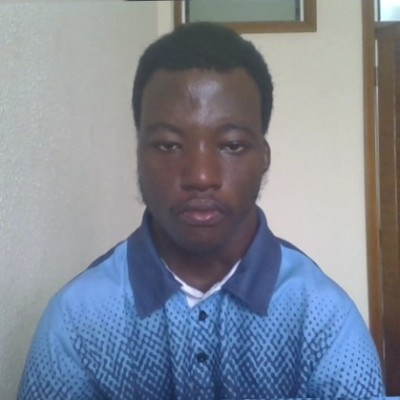

BLESSED FAIDOO | WDD 130

Hello! My name is Blessed Faidoo and I am from Accra, Ghana. I enjoy reading story books, love watching football, surfing the internet, and watching series...

Hello! My name is Blessed Faidoo and I am from Accra, Ghana. I enjoy reading story books, love watching football, surfing the internet, and watching series...